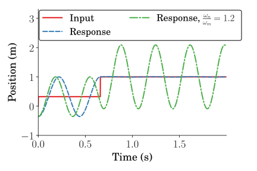

Eliminating Nonzero Initial States in Flexible Systems through Specified Insensitivity Input Shaping
Joshua Vaughan and Daniel Newman
Department of Mechanical Engineering
University of Louisiana at Lafayette
joshua.vaughan@louisiana.edu
@Doc_Vaughan
http://www.ucs.louisiana.edu/~jev9637/
Outline
- Input Shaping Background
- Dynamic Model
- Discrete Approximation
- Linearization
- Modal Analysis
- Concurrent Design Approach
- Simulated Results
Input Shaping Process


- Input shaper design:
- Natural frequency
- Damping ratio
- $\sum A_i = 1$
Vibration Constraints
$$
\fragment{0}{V(\omega, \zeta) = e^{-\zeta \omega t_n} \sqrt{[C(\omega,\zeta)]^2 + [S(\omega,\zeta)]^2}}
$$
$$
\begin{align}
\fragment{1}{C(\omega,\zeta) }&\fragment{1}{= \sum_{i=1}^{n} A_i e^{\zeta \omega t_i} \cos \left (\omega \sqrt{1 - \zeta^2} t_i \right )}\\
\fragment{2}{S(\omega,\zeta) }&\fragment{2}{= \sum_{i=1}^{n} A_i e^{\zeta \omega t_i} \sin \left ( \omega \sqrt{1 - \zeta^2} t_i \right )}
\end{align}
$$
The vibration constraint is achieved by setting:
$$
V(\omega, \zeta) \leq V_{tol}
$$
ZV-IC Shaper Solution
$$
\begin{align}
& \underset{t}{\text{minimize}}
& & t_n \\
& \fragment{1}{\text{subject to}}
& &\fragment{2}{PRV_{IC} = 0}\\
&&&\fragment{3}{A_i > 0}\\
&&&\fragment{4}{\sum_{i=1}^{n} A_i = 1}\\
\end{align}
$$
SI-IC Shaper Solution
\begin{equation}
\begin{aligned}
& \underset{t}{\text{minimize}}
& & t_n \\
& \fragment{1}{\text{subject to}}
& & \fragment{2}{PRV_{IC} \leq V_{tol}, \text{ } \forall \omega_1 \leq \omega \leq \omega_2}\\
&&& \fragment{3}{\left | A_i \right | \leq 1}\\
&&& \fragment{4}{\sum_{i=1}^{n} A_i = 1}\\
&&& \fragment{5}{\left |\sum_{i=1}^{k - 1} A_i \right | \leq 1, \text{ } \forall k \in n} \\ %\text{ } n,k=1,2,3...\\
\end{aligned}
\end{equation}
SI-IC Response

ZV-IC Response

Experimental Setup

SI-IC Sens Curve

ZV-IC Sens Curve

Simulation Variables
| $\mbox{Variable}$ | $\mbox{Value}$ |
|---|---|
| $\omega_n$ | $14.28\frac{\mbox{rad}}{\mbox{s}}$ |
| $\zeta$ | $0.01$ |
| $A_{max}$ | $0.9\frac{\mbox{m}}{\mbox{s}^2}$ |
| $V_{max}$ | $0.15\frac{\mbox{m}}{\mbox{s}}$ |
| $v_{f0}$ | $0\frac{\mbox{mm}}{\mbox{s}}$ |
| $y_{f0}$ | $0.36\mbox{mm}$ |